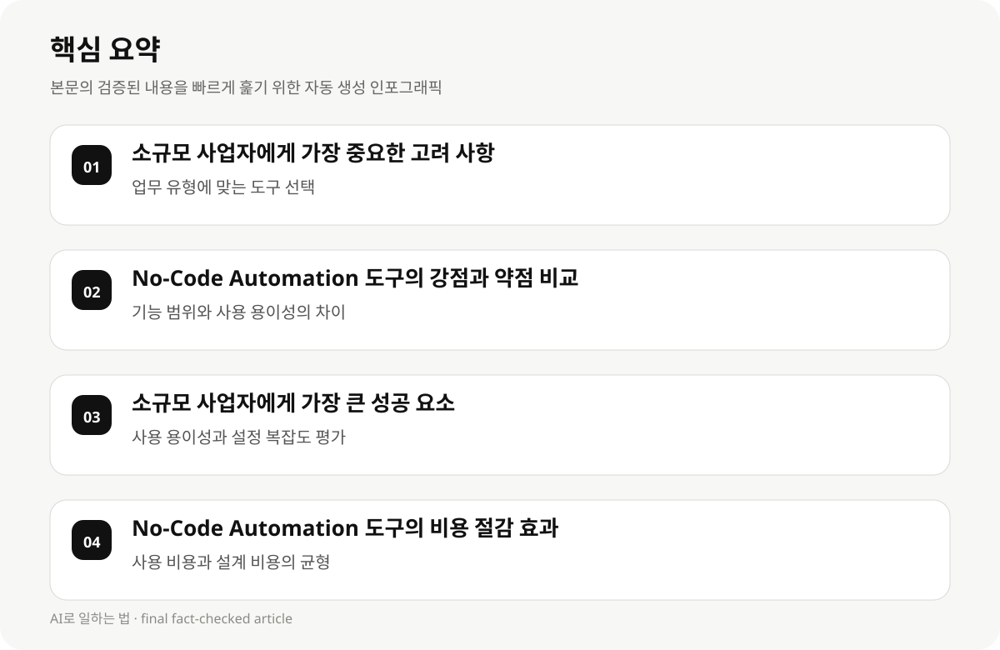

소규모 사업자에게 가장 중요한 고려 사항 #
소규모 사업자가 No-Code Automation 도구를 선택할 때 가장 중요한 고려 사항은 업무 유형과 업무 규모입니다. 예를 들어, 고객 관리, 자동화된 데이터 수집, 또는 단순한 프로세스 자동화 등 다양한 업무 유형에 맞는 도구를 선택해야 합니다.
또한, 업무 규모가 작다면 사용 용이성과 비용 효율성이 중요합니다. 복잡한 프로세스를 자동화하는 도구는 초기 설정이 어렵고, 유지 관리 비용이 높을 수 있습니다.
이러한 고려 사항을 바탕으로, 도구의 기능, 사용 용이성, 비용, 업무 유형에 맞는 적합성을 고려해야 합니다.
- 업무 유형에 맞는 도구 선택
- 비용 효율성과 유지 관리 비용 고려
- 사용 용이성과 설정 복잡도 평가
- 업무 규모에 따른 도구의 확장 가능성
No-Code Automation 도구의 강점과 약점 비교 #
No-Code Automation 도구는 사용 용이성과 비용 절감을 제공하지만, 복잡한 프로세스 자동화에 적합하지 않을 수 있습니다.
예를 들어, Flowforma는 간단한 프로세스 자동화에 적합하지만, Unito는 복잡한 데이터 처리에 강점이 있습니다.
도구의 기능 범위와 사용 용이성은 업무 유형에 따라 달라질 수 있으므로, 실제 사용 사례를 바탕으로 비교 분석이 필요합니다.
- 기능 범위와 사용 용이성의 차이
- 업무 유형에 맞는 도구 선택
- 비용 효율성과 유지 관리 비용의 균형
- 복잡한 프로세스 자동화에 적합한 도구 확인
소규모 사업자에게 가장 큰 성공 요소 #
소규모 사업자가 No-Code Automation 도구를 활용할 때 가장 큰 성공 요소는 사용 용이성과 비용 효율성입니다.
도구의 설정이 복잡하지 않으면, 업무를 자동화하는 데 시간과 에너지를 절약할 수 있습니다.
또한, 사용자 친화적인 인터페이스와 간단한 설정은 도구의 확장 가능성과 유지 관리의 편의성을 높일 수 있습니다.
- 사용 용이성과 설정 복잡도 평가
- 비용 효율성과 유지 관리 비용의 균형
- 사용자 친화적인 인터페이스 확인
- 업무 규모에 따른 도구 확장 가능성

No-Code Automation 도구의 비용 절감 효과 #
No-Code Automation 도구는 사용 비용과 설계 비용을 줄일 수 있지만, 초기 설정과 유지 관리 비용이 중요합니다.
예를 들어, Zenphi는 간단한 프로세스 자동화에 적합하지만, ToolJet는 복잡한 데이터 처리에 강점이 있습니다.
도구의 비용 구조는 사용 용이성과 확장 가능성에 영향을 줄 수 있으므로, 실제 사용 사례를 바탕으로 비교 분석이 필요합니다.
- 사용 비용과 설계 비용의 균형
- 비용 구조와 확장 가능성의 영향
- 사용 용이성과 설정 복잡도의 평가
- 업무 규모에 따른 도구 확장 가능성
소규모 사업자에게 가장 큰 장애물 #
소규모 사업자가 No-Code Automation 도구를 선택할 때 가장 큰 장애물은 사용 용이성과 비용 효율성입니다.
도구의 설정이 복잡하거나, 유지 관리 비용이 높다면, 업무 효율성과 비용 절감 목표에 도전할 수 있습니다.
또한, 업무 유형에 맞는 도구 선택이 중요하며, 실전 활용 전략과 비교 분석을 통해 적절한 도구를 선택해야 합니다.
- 사용 용이성과 설정 복잡도의 평가
- 비용 효율성과 유지 관리 비용의 균형
- 업무 유형에 맞는 도구 선택
- 실전 활용 전략과 비교 분석의 중요성
실전 활용 전략 및 비교 분석 #
소규모 사업자가 No-Code Automation 도구를 활용할 때, 업무 유형, 비용 효율성, 사용 용이성을 고려하여 도구를 선택해야 합니다.
도구의 기능 범위와 확장 가능성은 업무 규모에 따라 달라질 수 있으므로, 실제 사용 사례를 바탕으로 비교 분석이 필요합니다.
또한, 비용 구조와 사용 비용의 균형, 사용 용이성과 설계 복잡도의 평가가 중요하며, 실전 활용 전략과 비교 분석을 통해 최적의 도구를 선택해야 합니다.
- 업무 유형에 맞는 도구 선택
- 비용 효율성과 유지 관리 비용의 균형
- 사용 용이성과 설정 복잡도의 평가
- 실전 활용 전략과 비교 분석의 중요성
결론 및 실천 전략 #
소규모 사업자가 No-Code Automation 도구를 활용하여 업무 효율성을 높이기 위해서는 업무 유형, 비용 효율성, 사용 용이성을 고려하여 도구를 선택해야 합니다.
도구의 기능 범위와 확장 가능성은 업무 규모에 따라 달라질 수 있으므로, 실전 활용 전략과 비교 분석을 통해 적절한 도구를 선택해야 합니다.
또한, 비용 구조와 사용 비용의 균형, 사용 용이성과 설계 복잡도의 평가가 중요하며, 실천 전략을 통해 최적의 도구를 선택해야 합니다.
- 업무 유형에 맞는 도구 선택
- 비용 효율성과 유지 관리 비용의 균형
- 사용 용이성과 설정 복잡도의 평가
- 실전 활용 전략과 비교 분석의 중요성
참고 자료 #
10 Best No-Code Platforms For Process Automation (2026) - https://zenphi.com/10-best-no-code-platforms-for-process-automation/
No-Code Workflow Automation Tools in 2026 (With Honest Pros and Cons) - https://www.flowforma.com/blog/no-code-workflow-automation-tools/
17 Best No-Code Automation Tools in 2026 (Compared) - https://unito.io/blog/no-code-workflow-automation-tools/
25 Best No-Code Platforms for 2026 (Tried and Tested) - https://blog.tooljet.com/best-no-code-platforms/
- 10 Best No-Code Platforms For Process Automation (2026)
- No-Code Workflow Automation Tools in 2026 (With Honest Pros and Cons)
- 17 Best No-Code Automation Tools in 2026 (Compared)
- 25 Best No-Code Platforms for 2026 (Tried and Tested)
FAQ #
Q: No-Code Automation 도구를 선택할 때 가장 큰 고려 사항은 무엇인가요?
A: 업무 유형, 비용 효율성, 사용 용이성, 업무 규모를 고려해야 합니다.
Q: 소규모 사업자가 No-Code Automation 도구를 활용할 때 가장 큰 장애물은 무엇인가요?
A: 사용 용이성과 비용 효율성, 도구의 기능 범위와 확장 가능성입니다.
Q: No-Code Automation 도구의 비용 절감 효과는 어떻게 평가할 수 있나요?
- Q: No-Code Automation 도구를 선택할 때 가장 큰 고려 사항은 무엇인가요?
- A: 업무 유형, 비용 효율성, 사용 용이성, 업무 규모를 고려해야 합니다.
- Q: 소규모 사업자가 No-Code Automation 도구를 활용할 때 가장 큰 장애물은 무엇인가요?
- A: 사용 용이성과 비용 효율성, 도구의 기능 범위와 확장 가능성입니다.
- Q: No-Code Automation 도구의 비용 절감 효과는 어떻게 평가할 수 있나요?